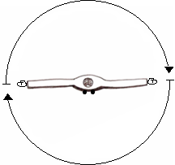
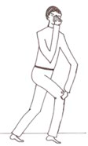
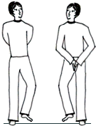
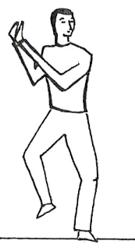

Conferência nº41
A DANÇA DOS DERVIXES
E A TRANSMUTAÇÃO DAS FORÇAS CÓSMICAS
O objetivo desta conferência é dar-nos as ferramentas para que possamos desenvolver-nos melhor no Trabalho Esotérico.
A DANÇA DO DERVIXES:
Os Dervixes são Mestres da Turquia que vivem no deserto. Tem Dervixes Cantantes e tem Dervixes Dançantes. Os Dervixes Cantantes ensinam através dos cantos e da música os processos da Consciência. Os Dervixes Dançantes ensinam através das danças como o corpo pode estar em harmonia com o Universo; com determinados movimentos ou runas, que dentro de nós mobilizam umas forças que são de muita utilidade para poder lograr a Concentração.
Então, estas danças têm por objetivo que possamos lograr a Concentração. Devemos fazê-las antes de qualquer prática para ter êxito. Deste modo, para conseguir qualquer prática, desdobramento, meditação, etc., se quisermos obter bons resultados devemos harmonizar o Corpo Físico com a parte interior. E se logra com estes exercícios.
Essas três danças são as seguintes:
Primeira Dança: abrir os braços, que fiquem retos e perpendiculares ao tronco. Colocar as palmas para cima e começar a girar no sentido das agulhas do relógio.
Esta prática e muito útil, porque descarrega o fígado, o plexo solar e a zona emocional. Além disso, organiza e coloca os sete Chakras a girar corretamente, no sentido das agulhas do relógio.
Lamentavelmente, o mau manejo das energias e o desgaste energético em que vivem todos os seres humanos fazem com que estes Chakras girem em sentido contrário. Este exercício alinha e coordena os três cérebros, e produz um fenômeno vibratório.
Têm que praticá-lo todos os dias. Executa-se, como mínimo, vinte e uma (21) voltas. Quando se conclui os giros avança o pé direito à frente, flexionando um pouco o joelho e põe o braço esquerdo sobre o joelho direito e com a mão direita (dedos) na glabela, para que não fique enjoado(a).
Se se fizer durante oito dias seguidos a pessoa se dará conta de que já não sente enjoo, ou o sente muito pouco. Então, se está descarregando o fígado, o que permite melhor desdobramentos.

A segunda Dança e para aquietar a mente, a maioria das pessoas trabalham durante todo o dia, e levam muitas preocupações. Essas preocupações são as que não deixam centrar-se quando se vai meditar, ou desdobrar-se, ou fazer qualquer outra prática.
Se somos intelectuais e estamos em um escritório todo o dia sentados é necessário que nos equilibremos um pouco, para adiantar o trabalho.
Então, é recomendável, durante um tempo de cinco ou dez minutos, fazer a dança que vamos ensinar...
É uma dança que coordena os três cérebros: primeiro aquieta o Cérebro Intelectual, a melhor maneira de aquietar o intelecto é não pensar; ao Cérebro Emocional, põe o ânimo adequado que se requer para começar qualquer prática e equilibra o Cérebro Motor-Instintivo-Sexual.
Este exercício é muito fácil e se leva a cabo assim: começamos a trotar no mesmo lugar, ao mesmo tempo começamos a aplaudir ritmicamente na frente e atrás do corpo, e girar ao mesmo tempo a cabeça de um lado a outro. Esse é todo o exercício.
Indubitavelmente, enquanto se faz o exercício não se pode pensar, porque nenhum pensamento se sustenta aí, então começa a dar-se o processo de equilíbrio. Se fizermos este exercício durante cinco ou dez minutos antes de qualquer prática, obteremos uma capacidade de concentração muito superior.
Terceira Dança: começamos a trotar no mesmo lugar. Desta vez começamos a aplaudir ritmicamente do lado esquerdo e girando a cabeça para o lado direito. Logo aplaudimos do lado direito e giramos a cabeça para o lado esquerdo. É muito fácil, e tem que praticá-lo até coordenar muito bem.
Aí está estes dois exercícios. O importante é coordenar as três coisas, os movimentos de cabeça, os movimentos dos braços, na frente e atrás, e os lados, e os movimentos das pernas. Finalmente se coordena também a respiração. Quando já se tem suficiente prática se faz com muita facilidade. A prática faz o mestre.
A TRANSMUTAÇÃO DAS FORÇAS CÓSMICAS:
A Transmutação das Forças Cósmicas é um trabalho que devemos fazer conscientemente. Este trabalho se faz entre o Planeta Terra, o Microcosmos Homem e o Sol Sírio.
Antes de iniciá-la devemos fazer a dança dos dervixes para poder ter suficiente concentração.
Quando fazemos este trabalho ganhamos Dharma pela ajuda consciente ao planeta. Esse Dharma se vê refletido na força que nos fica pela participação deste trabalho.
O planeta Terra necessita nossa colaboração consciente. O planeta Terra tem também seu Sol Central, este Sol se chama Melquisedec, o Sol Interior.
No Sol Sírio encontramos o Exército da Voz. Dele vem toda a energia que sustenta a Criação. Se a pessoa imagina o Sol Espiritual de Sírio, verá uma espiral de luzes formada por milhões de anjos que movem o Exército da Voz, de um brilho espetacular. Dependendo do grau de concentração que se tenha se pode ver isso.
Uma pessoa fazendo a Transmutação das Forças Cósmicas durante uma hora ou duas, pode chegar a ver estas coisas, a oportunidade de vê-lo se logra com uma boa concentração.
Nós fazemos este trabalho invocando a nosso Ser, porque para o nosso Ser não tem espaço, nem tempo. Ou seja, a distância que tem a Sírio não importa, a distância que tem de onde estamos ao centro da Terra, os 6.240 quilômetros que tem mais ou menos ao centro da terra, para o Ser é irrelevante. Ele em um segundo pode estar aí.
Nos sentamos com as palmas das mãos para cima. Vamos imaginar os vórtices de recepção e transmissão da energia cósmica que tem nos dedos dos pés.
Então o trabalho consiste em transladar energia do planeta Terra até coração, logo translada-la até o Sol Sírio, logo volta a baixá-la até o nosso coração e finalmente entregar essa Energia Cósmica ao planeta Terra.
Se faz a volta completa. Levamos uma energia a Sírio e trazemos uma energia de Sírio ao planeta Terra, a exalamos no planeta Terra expulsando todo o ar dos pulmões.
Pode ser sentado ou de pé, não importa. Inalo fazendo o primeiro oito no centro do planeta Terra e o levo a altura do coração, se faz outro oito. Sai até o Sol Sírio pelo cocuruto, porque o cocuruto é o ponto de saída do planeta do microcosmos. Então chegamos ao Sol Sírio, imaginamos a Sírio, fazemos o oito aí; e retornamos novamente ao coração e fazemos um oito. Na saída do coração exalamos e expulsamos toda a descarga ao centro do planeta, fazendo um último oito.
Uma respiração completa (inalação, retenção e exalação) durará de trinta segundos a um minuto, de acordo com a capacidade pulmonar que se tenha. Não há com que preocupar-se por fazer rápido, não tem que ter pressa.
Ao terminar a Transmutação estaremos carregados com uma energia inimaginável para praticar desdobramento, meditação, etc... É uma energia muito especial, quanto mais se tem transmutado, melhor se sente e melhor podemos nos concentrar para fazer as práticas.
A energia a podemos imaginar cinza prateada, e quando menos se espera, se começa a visualizar. Se verá um fluxo de energia que está circulando através da pessoa, porém isso é durante a prática.
As condições para fazer este exercício de transmutação são:
- Estar descalço
- Um lugar tranquilo
- Se é possível em contato com a terra, se não se pode, então, não estar sobre materiais que nos isolem como os pisos de lajotas, ou tapetes, etc.
Para fazer o trabalho de Transmutação das Forças Cósmicas tem que fazer cinco oitos horizontais, iguais ao símbolo do infinito (∞):
- primeiro oito em baixo, no centro da Terra;
- segundo oito na altura do coração;
- terceiro oito no Sol Sírio;
- quarto oito na altura do coração novamente;
- quinto oito finalmente chegamos outra vez no centro da Terra.
PRÁTICA:
começamos com a inalação;
com a imaginação recolhemos a energia do centro do planeta Terra, fazendo o primeiro oito;
logo ascendemos até o Coração;
fazemos o segundo oito na altura do Coração;
retendo o ar, saímos pelo Cocuruto e vamos até Sírio, nos imaginamos o Sírio;
fazemos o terceiro oito em Sírio;
descemos até o nosso coração, penetrando pelo cocuruto;
fazemos o quarto oito no coração;
saímos do Coração, exalamos enviando para a Terra toda a energia que trazemos, imaginando que descarregamos essa energia no centro do planeta;
e fazemos o quinto oito.